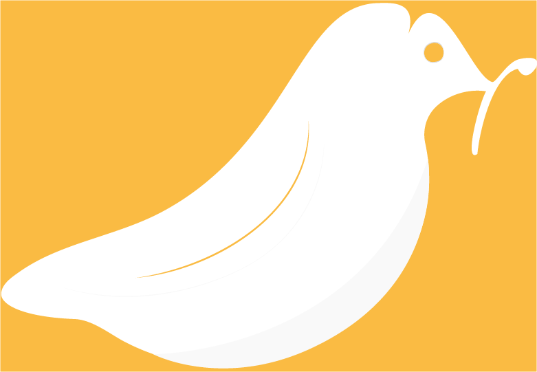

01
Alimentación
Observa cómo te alimentas, sin convertir cada comida en una cifra.
Registros simples que te ayudan a reconocer qué decisiones te hacen sentir mejor.
Cuida tu alimentación, movimiento y descanso. Sigue tus sesiones y descubre qué está ayudándote a sentirte mejor.
Vuelve a lo esencial.
Cuando cuidas tu base, todo lo demás tiene dónde crecer.
SIGUE nace de algo que sabemos porque lo hemos probado: cuando comemos bien, nos movemos y dormimos bien, nuestra vida mejora. Tenemos más energía, más estabilidad y más capacidad para acercarnos al estado de bienestar que soñamos.
No se trata de hacerlo perfecto. Se trata de cuidar esos tres pilares y volver a ellos cada vez que lo necesites.
Primero tu base.
Luego tu mejor versión.
Alimentación
Registros simples que te ayudan a reconocer qué decisiones te hacen sentir mejor.
Movimiento
Lee pasos y entrenamientos desde Apple Salud, admite registros manuales y mantiene tus sesiones visibles en Inicio y en la pantalla bloqueada.
Descanso
Más que medir horas: registra cómo dormiste y encuentra patrones que sí puedes usar.
Cuando hay suficientes registros, Descubre relaciona alimentación, movimiento y descanso para mostrarte patrones útiles. El análisis ocurre en tu iPhone y nunca inventa conclusiones cuando aún faltan datos.
Tu movimiento es más constante incluso en los días con menos energía.
Los días que descansas mejor también te resulta más fácil cuidar tu alimentación.
SIGUE funciona sin crear una cuenta. Tus hábitos, registros y evolución permanecen en tu iPhone. La conexión con Apple Salud es opcional y tú decides qué compartir.

Estamos en beta abierta. Si quieres probar SIGUE, descárgalo desde TestFlight.